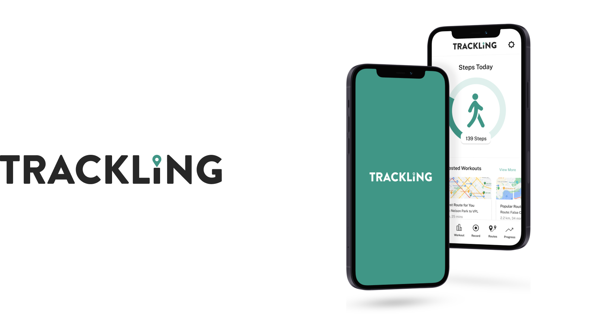
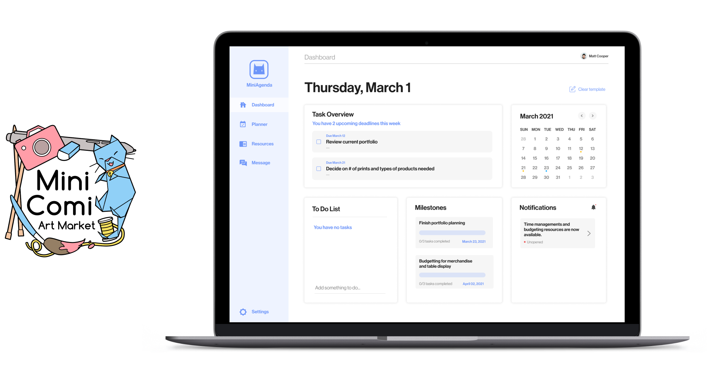

Hi, I’m Sophia! A Product Designer with a background in Interactive Design and Business Strategy.
Previously at SAP, Electronic Arts, and Avanade.
Looking for full time opportunities.
Electronic Arts
Allowing users to become more aware of a game's state with display tiles.

Trackling
Helping seniors through personalized physical activity with data centered and accessible design.

Vancouver Society for the Creation of Independent Art
Strengthing stakeholder connection between organizers and coventions participants through in depth user research.
About
I study Interactive Design and Business Marketing at Simon Fraser University. My skills range from UX/UI design, user research, website building to business strategy. I enjoy working in a innovative, challenging, and organized teams.
Out of work, you can find me learning about nutrition, discovering new music, exploring different cities/countries, and snowboarding on Whistler Mountain.
Currently working PST and open to relocating :)